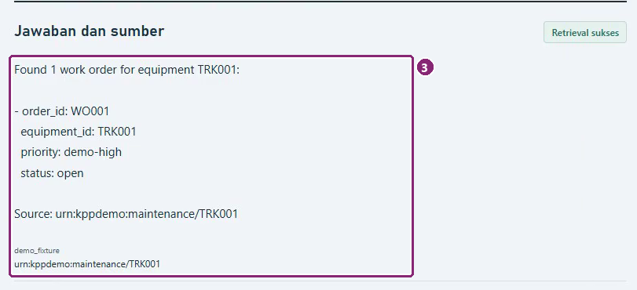

YAML adalah sumber; Python menjalankan graph
- YAML sumber FoundryAgent, kondisi, dan urutanCompiler membaca subset
- Mapping JSONAturan dan agent yang dipakai runtimePython membaca mapping
WorkflowBuilderBuat executor dan edge bersyaratJalankan graph- HasilKlien menerima jawaban dan sumber
Buka tiga file yang menjelaskan perpindahannya
- YAML sumber menyimpan
classify_questiondan kondisiroute_question. - Mapping JSON runtime menyimpan informasi tentang route dan specialist. YAML target MAF membantu membaca hasil mapping, tapi bukan file yang di-load oleh code-first.
- Python workflow memasang executor untuk menerima data dan edge untuk memilih langkah berikutnya. Mulai dari
MiningWorkflow.build()danMiningWorkflow.run().
Kalau kondisi berubah, review perubahan source, mapping, dan graph sebagai satu kesatuan. Compiler demo hanya menerima subset dan baseline yang didukung; jangan mengganti hash demi membuat konversi lolos. Baca langkah konversi lengkap.
Satu request: TRK001 → MCP → WO001
- BrowserInput TRK001Kirim request
- Graph PythonExecutor dan edge bersyaratPilih specialist
- Foundry dan MCPSpecialist membaca work orderKirim bukti
- Python dan UIPeriksa bukti, tampilkan WO001 dan sumber
- Browser mengirim pertanyaan ke server Python; MAF menjalankan graph untuk request itu.
- Router Foundry membaca pertanyaan dan mengembalikan
route: mcp. Edge bersyarat Python memilih cabang maintenance berdasarkan nilai tersebut. - Specialist Foundry memakai
get_work_ordersmelalui MCP. Tool mencariTRK001dan menemukanWO001pada data sintetis. - Python memeriksa bukti specialist, membentuk hasil, dan mengirim jawaban, sumber, serta trace kembali ke UI.
UI tidak memilih specialist, dan router tidak membaca tabel work order. Agent, tool, dan model tetap bekerja di Foundry dan layanan data yang sudah disiapkan.
Siapkan Python dan profil sandbox
Ikuti setup bersama untuk Python 3.13, paket baseline, dan profil runtime lokal. Code-first memakai environment baseline, bukan environment eksperimen declarative.
Tes graph dulu tanpa Azure
.\.venv\Scripts\python.exe -m pytest tests\unit\test_maf_workflow.py tests\contract\test_maf_ui.py -qTes ini memakai fixture lokal. Hasilnya menunjukkan graph dan kontrak UI dapat diuji, bukan bukti panggilan agent berhasil.
Sebelum tes live: identitas, agent, dan backing API
Login Azure CLI sebagai pengguna sandbox yang disetujui. Di profil lokal, arahkan Foundry dan backing service ke milikmu. Pastikan model, versi router/specialist, izin Foundry dan data, serta policy API cocok. Pada host Azure, gunakan managed identity dan pengaturan aplikasi non-publik. Panduan pengaturan host dan audience.
.\.venv\Scripts\python.exe .\tools\run_maf_ui.py --port 8765Buka http://127.0.0.1:8765/ setelah /health melaporkan ready dan local-maf-ui. Server di loopback saja. Health bukan bukti koneksi model atau hasil retrieval.
Praktik: cocokkan trace, jawaban, dan sumber
- Pilih Maintenance MCP atau masukkan
Show work orders for equipment TRK001. - Jalankan sekali pada sandbox siap. Di Jalur eksekusi, periksa router dan specialist MCP; lihat panel kode untuk langkah yang dipilih.
- Di Jawaban dan sumber, periksa
mcp / success,WO001untukTRK001, danurn:kppdemo:maintenance/TRK001. Buka detail trace untuk mengecek bukti tool.


Jangan samakan kegagalan dan hasil kosong
Jika startup gagal, cek port, Python, dan profil. Jika panggilan ditolak, cek tenant, izin, dan audience. Jika data belum terverifikasi, cek bukti dan versi agent; teks yang terdengar meyakinkan bukan evidence.
Setelah run dan cleanup selesai, hentikan UI lokal dari terminal kedua:
.\.venv\Scripts\python.exe .\tools\run_maf_ui.py --port 8765 --stopJika UI menolak karena run masih aktif, tunggu lalu ulangi. Menutup UI tidak menghentikan resource Azure. Lihat biaya host, model, dan data sebelum mengetes live.